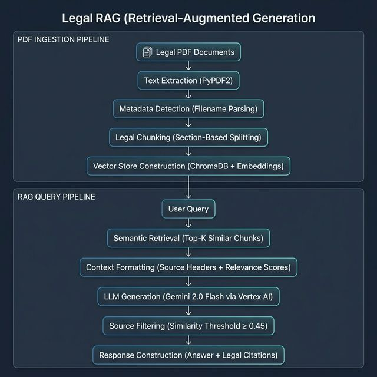

1. Introduction
1.1 Problem Statement
India has one of the most extensive and complex legal frameworks in the world. With hundreds of laws, thousands of sections, and constantly evolving amendments, it is extremely difficult for ordinary citizens to understand their legal rights and obligations. When a person faces a legal issue — whether it is related to property, marriage, criminal matters, consumer rights, or digital privacy — they often have no easy way to get a quick, reliable answer without consulting an expensive lawyer.
Existing legal information sources such as government websites, bare act PDFs, and legal databases are written in formal legal language that is hard to understand for someone without a law background. There is a clear gap: common people need a simple, accessible, and intelligent tool that can read through these complex legal documents and answer their questions in plain, everyday language.
1.2 Proposed Solution
The Legal Query System is a web-based AI assistant designed to bridge this gap. It allows users to ask legal questions in simple, natural language (for example, "What happens if someone breaks a contract?" or "What are my rights if I am arrested?") and receive clear, well-explained answers that include proper legal citations — the exact Act name, Section number, and relevant clause text.
The system is built using a modern AI technique called Retrieval-Augmented Generation (RAG), which ensures that every answer is grounded in actual legal documents rather than being made up by the AI. This makes the system both accurate and trustworthy.
1.3 What is RAG (Retrieval-Augmented Generation)?
RAG is a technique that combines two powerful ideas to make AI systems more reliable:
- Retrieval — Before answering a question, the system first searches through a knowledge base (in our case, Indian legal documents) and retrieves the most relevant sections that relate to the user's question.
- Generation — The retrieved sections are then given to a Large Language Model (LLM) as context, and the LLM uses this context to generate a well-written, accurate answer.
The key advantage of RAG over a plain AI chatbot is that the AI does not rely on its own memory to answer legal questions. Instead, it always refers back to the actual source documents. This dramatically reduces the chances of the AI "hallucinating" or making up incorrect information — a critical requirement when dealing with legal matters.
2. PDF Ingestion Pipeline
Before the system can answer any legal queries, it must first process and understand all the legal documents. This is done through the PDF Ingestion Pipeline — a series of steps that takes raw legal PDF files and converts them into a searchable, AI-ready database. The pipeline runs once (or whenever new documents are added) and prepares the knowledge base for the RAG system.
2.1 Text Extraction
The first step is extracting readable text from the PDF files. Legal documents in India are typically published as PDF files by the government. These PDFs contain formatted text with headers, footers, page numbers, and sometimes multi-column layouts.
Our system uses PyPDF2, a Python library, to open each PDF file and extract text from every page. The extracted text is saved as a plain text file for further processing. During extraction, the system also adds page markers (such as "PAGE 1", "PAGE 2") to keep track of which content came from which page — this helps during debugging and verification.
2.2 Metadata Detection
Legal documents need proper identification — the system must know which Act a piece of text belongs to, and what year it was enacted. Rather than manually entering this information for each document, our system automatically detects metadata from the filename of each PDF.
The filename is parsed using a smart algorithm:
- Underscores in the filename are replaced with spaces (e.g., indian_contract_act becomes Indian Contract Act).
- A trailing four-digit number is recognized as the year (e.g., 1872).
- The remaining part is title-cased to create a clean, readable Act name.
- For special cases (like the Aadhaar Act or the Constitution), a manual mapping is used to get the exact correct name.
This metadata (Act name and year) is attached to every chunk of text extracted from that document, ensuring that when the AI cites a source, it can provide the exact name like "Indian Contract Act, 1872, Section 73" instead of just a filename.
2.3 Legal Text Chunking
This is one of the most important and carefully designed parts of the pipeline. Legal documents are very long — sometimes hundreds of pages. An AI model cannot process an entire document at once, so we need to break it into smaller, meaningful pieces called "chunks." However, the way we chunk the text matters a lot — we cannot just split it arbitrarily, or we would lose the meaning of legal sections.
How Our Document-Based Chunking Strategy Works
Our chunking strategy is specifically designed for the structure of Indian legal documents. Indian Acts and laws follow a well-defined structure:
Act Name → contains multiple Chapters (e.g., Chapter I, Chapter II…) → each Chapter contains multiple Sections (e.g., Section 1, Section 2…) → each Section contains the actual legal text, definitions, provisions, and clauses.
Our system exploits this natural structure to create intelligent chunks:
- Raw Text Cleaning: Before chunking, the extracted text is cleaned up. PDF artifacts like gazette headers (e.g., "THE GAZETTE OF INDIA EXTRAORDINARY"), page markers, excessive whitespace, and formatting noise are removed. This ensures that only the actual legal content is processed.
- Section-Based Splitting: The system uses a pattern-matching approach to identify section boundaries in the text. It looks for patterns like "1. Short title and commencement" or "33A. Penalty for fraud" — a number (optionally followed by a letter), a period, and then the section title. This is how sections are numbered in Indian legislation, and the system uses this pattern to split the text at every section boundary.
- Chapter Tracking: As the system reads through the text, it also watches for chapter headers (like "CHAPTER IV — OF THE PERFORMANCE OF CONTRACTS"). Whenever it finds a chapter header, it updates the current chapter label. This means every chunk knows which chapter it belongs to, enabling better citation.
- Preamble Handling: Any text that appears before the first section (such as the preamble, definitions of the Act, or introductory statements) is captured as a separate "Preamble" chunk so that it is not lost.
- Large Section Splitting: Some sections in legal documents can be very lengthy (for example, Section 34 of the Aadhaar Act or certain constitutional articles). If a section exceeds 3,000 characters, the system further splits it at sentence boundaries — it looks for full stops or semicolons followed by a space, and splits at the nearest one within a 1,500-character window. This ensures that even the sub-parts of a large section are complete, grammatically correct sentences rather than being cut in the middle of a clause.
- Fallback for Non-Standard Documents: If a document does not follow the standard section numbering (for example, the Preamble of the Constitution or an unnumbered schedule), the system falls back to pure sentence-boundary splitting, creating sequential parts labeled "Part 1", "Part 2", etc.
- Short Section Filtering: Very short text fragments (less than 70 characters) are automatically skipped. These are typically table-of-contents entries or formatting artifacts that would not be useful for answering legal queries.
Each chunk is stored as a structured record containing both the text content and its associated metadata — the Act name, year, source filename, chapter, section number, and section title. This rich metadata is what enables precise legal citations later.
Act: Indian Contract Act, 1872 | Chapter: CHAPTER VI — Of the Consequences of Breach of Contract | Section: 73 — Compensation for loss or damage caused by breach
Text: "When a contract has been broken, the party who suffers by such breach is entitled to receive, as compensation for loss or damage caused to him thereby, such as naturally arose in the usual course of things from such breach…"
2.4 Vector Store Construction
Once all the legal documents have been extracted, cleaned, and chunked, the next step is to make them searchable by meaning rather than by keywords. This is done by converting each text chunk into a vector embedding — a list of numbers that represents the meaning of the text — and storing them in a vector database.
Our system uses the following components for this step:
- Sentence Transformers (all-MiniLM-L6-v2): This is a pre-trained AI model that converts any text into a 384-dimensional vector (a list of 384 numbers). Texts with similar meanings will have vectors that are close to each other in this mathematical space. For example, the chunks about "breach of contract" and "compensation for breaking an agreement" would have vectors that are very similar.
- ChromaDB: This is a vector database that stores all the embeddings and their associated metadata. It is optimized for fast similarity searches — when a user asks a question, the system can quickly find the chunks whose meanings are closest to the question.
The vector store is configured to use cosine similarity as the distance metric, which measures the angle between two vectors. A cosine similarity of 1 means the texts are perfectly similar in meaning, while 0 means they are completely unrelated.
All chunks are embedded in batches of 32 (for efficiency) and then added to ChromaDB in batches of 100. The resulting vector database is persisted to disk so that it does not need to be rebuilt every time the system starts — it is a one-time computation.
3. RAG Query Pipeline
When a user asks a legal question, the system processes it through the RAG Query Pipeline. This pipeline takes the user's question, finds the most relevant legal content from the vector database, gives that content to an AI model for reasoning, and returns a well-structured, cited answer. Here is a breakdown of each step:
3.1 Semantic Retrieval
The first step in answering a query is finding the most relevant chunks from the legal database. This is called semantic retrieval because it searches by meaning, not just by keywords.
When a user types a question (for example, "What is the punishment for theft?"), the system:
- Converts the question into a vector embedding using the same Sentence Transformer model that was used during ingestion.
- Searches the ChromaDB vector store for the top 6 most similar chunks (called top-k retrieval). The similarity is calculated using cosine distance.
- Returns these 6 chunks along with their metadata (Act name, section, chapter) and their similarity scores.
The reason we retrieve 6 chunks (instead of just 1 or 2) is to give the AI model enough context to form a comprehensive answer. A legal question might span multiple sections or even multiple Acts, and having 6 relevant pieces of text gives the model a more complete picture.
3.2 Context Formatting
The retrieved chunks cannot be passed to the AI model as raw text — they need to be organized and labeled properly so that the model can understand where each piece of information comes from. This step creates a structured context string.
For each retrieved chunk, the system creates a header that includes:
- The Act name (e.g., "Bharatiya Nyaya Sanhita, 2023")
- The Section number and title (e.g., "Section 303 — Theft")
- The Chapter (e.g., "CHAPTER XVII — Of Offences Against Property")
- The Relevance score (e.g., "Relevance: 89.34%")
All chunks are then joined together with separators, creating a single, well-formatted block of text that the AI model can read and reference. This formatting is crucial — it gives the AI model clear signals about which Act and section each piece of text belongs to, enabling accurate citations.
3.3 LLM Generation
The core intelligence of the system comes from the Large Language Model (LLM). Our system uses Google Gemini 2.0 Flash, accessed through the Vertex AI platform. This model reads the formatted context (the relevant legal chunks) and the user's question, and generates a natural, human-readable answer.
The LLM is guided by a carefully crafted system prompt that instructs it to:
- First explain the answer in very simple, everyday language so that anyone can understand it.
- Then provide the formal legal explanation with proper citations (Act name, Section number, and exact clause text).
- Never make up information — if the provided context does not contain the answer, it should honestly say so.
- For casual conversations (like greetings), respond naturally without legal jargon.
- Always include a legal disclaimer at the end of substantive legal answers.
The model also supports multi-turn conversations — it remembers the last 6 messages from the conversation history, allowing users to ask follow-up questions like "Can you explain Section 73 in more detail?" without having to repeat the context.
The model's temperature is set to 0.2 (a low value), which makes the responses more focused and deterministic — important for legal accuracy where creative or variable responses are not desirable.
3.4 Source Filtering
Not all retrieved chunks are equally relevant. Some may have been retrieved simply because they share a few common words with the question but are not actually related to the topic. To handle this, the system applies a relevance threshold.
Any source with a similarity score below 0.45 (45%) is filtered out and not shown to the user as a citation. This ensures that:
- When a user asks a genuine legal question, only the truly relevant sources are displayed.
- When a user is just having a casual conversation (like saying "hello"), no irrelevant legal citations are shown — the system recognizes that a greeting has low similarity with all legal documents and filters everything out.
This filtering step is essential for maintaining user trust. Showing irrelevant citations would confuse users and undermine the credibility of the system.
3.5 Response Construction
The final step is assembling the complete response that is sent back to the user. The response contains two parts:
- The Answer: The natural-language explanation generated by the LLM, which includes the simple explanation, the legal reasoning, and the citations woven naturally into the text.
- The Source Citations: A list of the filtered, relevant source documents, each containing the Act name, Section, Chapter, year, a cleaned excerpt of the source text, and the similarity score. The source text is cleaned for display — leading section numbers are removed (since they are already shown in metadata), excessive whitespace is collapsed, and long texts are truncated at sentence boundaries to keep them readable.
This dual-response design allows the user interface to display the answer prominently while also providing expandable source citations that users can click to verify the information — much like how a legal brief includes footnotes.
4. RAG Pipeline Flowchart
The following diagram provides a visual overview of the complete RAG pipeline — from document ingestion to query answering:

Figure 1: Complete RAG Pipeline — PDF Ingestion (top) and Query Processing (bottom)
As shown in the diagram, the system operates in two distinct phases:
- Offline Phase (PDF Ingestion): This runs once (or when new documents are added). It processes all legal PDFs through text extraction, metadata detection, legal chunking, and vector store construction. The result is a ready-to-search vector database stored on disk.
- Online Phase (Query Processing): This runs every time a user asks a question. The query flows through semantic retrieval, context formatting, LLM generation, source filtering, and response construction — returning a cited answer in seconds.
5. System Architecture
The Legal Query System follows a three-tier architecture with clearly separated responsibilities:
5.1 Backend Architecture
The backend consists of two servers running simultaneously:
-
RAG API Server (Python/Flask — Port 5000): This server hosts the RAG pipeline. It
exposes a
/api/queryendpoint that accepts a user's question and returns the AI-generated answer with citations. It also provides an/api/ingestendpoint to trigger re-ingestion of PDFs, and a/api/healthendpoint for health checks. The RAG pipeline is loaded as a singleton (created once, reused for all requests) to avoid the overhead of loading models repeatedly. - Application Server (Node.js/Express — Port 3001): This server handles user authentication, session management, and acts as a gateway to the RAG API. It connects to a MongoDB database to store user accounts and chat sessions. When a user sends a query through the frontend, this server first authenticates the user, then forwards the query to the RAG API, receives the response, saves the conversation in the database, and sends the result back to the frontend.
5.2 Frontend Architecture
The frontend is built with React.js (using the Vite build tool for fast development) and provides four main pages:
- Login Page: Allows existing users to sign in with their email and password.
- Signup Page: Allows new users to create an account with their name, email, and password.
- Dashboard: Displays all of the user's chat sessions, sorted by most recent. Users can create new sessions, view old ones, mark queries as solved, or delete sessions.
- Chat Page: The main interaction page where users type their legal questions and receive AI-generated answers with expandable source citations. The chat interface supports multi-turn conversations and displays a legal disclaimer with each response.
5.3 Authentication & Session Management
The system implements secure user authentication using:
- JWT (JSON Web Tokens): After a user logs in, the server issues a signed token that the frontend stores locally. This token is sent with every subsequent request to verify the user's identity.
- bcrypt Password Hashing: User passwords are never stored in plain text. They are hashed using bcrypt with a salt factor of 12, making them virtually impossible to reverse-engineer.
- Chat Sessions: Each user's conversations are stored as separate sessions in MongoDB, with full message history and source citations. Users can return to previous sessions to review past legal queries and answers.
6. Knowledge Base & Legal Documents
The system's knowledge base contains 18 major Indian legal documents covering a wide range of legal topics:
| # | Document Name | Category |
|---|---|---|
| 1 | Constitution of India, 2024 | Constitutional Law |
| 2 | Bharatiya Nyaya Sanhita, 2023 | Criminal Law |
| 3 | Bharatiya Nagarik Suraksha Sanhita, 2023 | Criminal Procedure |
| 4 | Bharatiya Sakshya Adhiniyam, 2023 | Law of Evidence |
| 5 | Indian Contract Act, 1872 | Civil Law |
| 6 | Code of Civil Procedure, 1908 | Civil Procedure |
| 7 | Transfer of Property Act, 1882 | Property Law |
| 8 | Specific Relief Act, 1963 | Civil Law |
| 9 | Hindu Marriage Act, 1955 | Family Law |
| 10 | Special Marriage Act, 1954 | Family Law |
| 11 | Protection of Women from Domestic Violence Act, 2005 | Family Law |
| 12 | POCSO Act, 2012 | Child Protection |
| 13 | Information Technology Act, 2000 | Cyber & Digital Law |
| 14 | Aadhaar Act, 2016 | Identity & Government Services |
| 15 | Central Goods and Services Tax Act, 2017 | Tax Law |
| 16 | Environment Protection Act, 1986 | Environmental Law |
| 17 | Motor Vehicles Act, 1988 | Motor Vehicle Regulation |
| 18 | Right to Information Act, 2005 | Transparency & Governance |
This diverse collection ensures that the system can answer questions across constitutional rights, criminal law, civil procedures, family matters, child protection, cyber law, tax, environmental issues, traffic regulations, and government transparency.
7. Technology Stack
| Component | Technology | Purpose |
|---|---|---|
| Frontend | React.js (Vite) | User interface with chat and dashboard |
| Application Server | Node.js / Express.js | Authentication, session management, API gateway |
| RAG API Server | Python / Flask | RAG pipeline — retrieval and AI generation |
| Database | MongoDB | User accounts and chat session storage |
| Vector Database | ChromaDB | Storing and searching text embeddings |
| Embedding Model | Sentence Transformers (all-MiniLM-L6-v2) | Converting text to vector representations |
| LLM | Google Gemini 2.0 Flash (Vertex AI) | Generating natural-language legal answers |
| PDF Processing | PyPDF2 | Extracting text from legal PDF documents |
| Authentication | JWT + bcrypt | Secure user login and password hashing |
| HTTP Client | Axios | Frontend-to-backend and backend-to-RAG communication |
8. Key Features
- Natural Language Understanding: Users can ask questions in plain English without knowing specific legal terminology. The semantic search finds relevant sections regardless of the exact wording used.
- Accurate Legal Citations: Every answer includes properly cited references — the Act name, Section number, Chapter, and relevant excerpt — so users can verify the information independently.
- Multi-Turn Conversations: The system remembers the context of the ongoing conversation (up to the last 6 messages), allowing users to ask follow-up questions naturally.
- Smart Response Behavior: The system distinguishes between casual greetings and actual legal questions. For greetings, it responds naturally. For legal questions, it provides structured, cited answers.
- Source Transparency: Every response comes with expandable source citations that show the relevant text excerpts, similarity scores, and exact legal references.
- Session Management: Users can create, revisit, and manage multiple query sessions — useful for tracking different legal issues over time.
- Secure Authentication: Protected user accounts with hashed passwords and JWT-based authentication ensure data privacy.
- Relevance Filtering: A 45% similarity threshold automatically filters out irrelevant sources, preventing noise in the citations.
- Legal Disclaimer: Every substantive legal answer includes a disclaimer advising users to consult a qualified professional, ensuring responsible use.
9. Challenges & Solutions
| Challenge | Solution |
|---|---|
| PDF text extraction produces noisy output with headers, footers, and formatting artifacts | Implemented a dedicated text cleaning step that removes gazette headers, page markers, and excessive whitespace using regular expressions |
| Fixed-size text chunking breaks legal sections in the middle, losing meaning | Designed section-aware chunking that splits by legal section boundaries and only sub-splits large sections at sentence boundaries |
| Some documents do not follow standard section numbering | Implemented a fallback strategy that splits by sentence boundaries and creates sequential parts |
| Identifying Act names and years reliably from diverse filenames | Combined filename parsing (underscore removal, year extraction, title-casing) with a manual override map for special cases |
| AI model generating citations for casual greetings | Added similarity-based source filtering (threshold 0.45) and explicit system prompt rules for casual conversation handling |
| Long response times due to model loading | Used a singleton pattern to load the pipeline once and reuse it for all requests |
10. Future Scope
- Multi-Language Support: Extending the system to accept queries and generate answers in Hindi and other regional Indian languages to serve a wider audience.
- Case Law Integration: Adding Supreme Court and High Court judgments to the knowledge base, enabling the system to cite relevant case precedents along with bare Act text.
- Hybrid Search: Combining semantic (vector) search with keyword-based (BM25) search for improved retrieval accuracy, especially for queries containing specific legal terms or section numbers.
- Voice Interface: Adding speech-to-text and text-to-speech capabilities so that users can ask legal questions verbally — particularly useful for users who are not comfortable typing.
- Document Upload: Allowing users to upload their own legal documents (such as contracts or agreements) for the AI to analyze and explain.
- Advanced Citation Linking: Providing clickable links that directly highlight the cited section text within the original PDF document.
- Admin Dashboard: Building an admin panel to monitor usage statistics, manage documents, and view analytics on the most commonly asked legal topics.
- Fine-Tuned Embeddings: Training custom embedding models specifically on Indian legal text to improve retrieval accuracy beyond what general-purpose models can achieve.
11. Conclusion
The Legal Query System demonstrates how modern AI techniques — specifically Retrieval-Augmented Generation — can be applied to make complex legal information accessible to ordinary citizens. By combining intelligent document processing, semantic search, and large language model generation, the system provides accurate, well-cited, and easy-to-understand answers to legal questions.
The carefully designed PDF ingestion pipeline ensures that legal documents are broken into meaningful, well-labeled chunks that preserve the natural structure of Indian legislation. The RAG query pipeline ensures that every answer is grounded in actual source documents, with proper citations and relevance filtering to maintain accuracy and trust.
With 18 major Indian laws in its knowledge base — covering everything from constitutional rights and criminal law to cyber law, environmental protection, and motor vehicle regulations — the system serves as a comprehensive first point of reference for anyone seeking to understand their legal rights and obligations under Indian law.
While the system is not a substitute for professional legal counsel, it significantly lowers the barrier to accessing legal knowledge and empowers citizens to make more informed decisions about their legal matters.